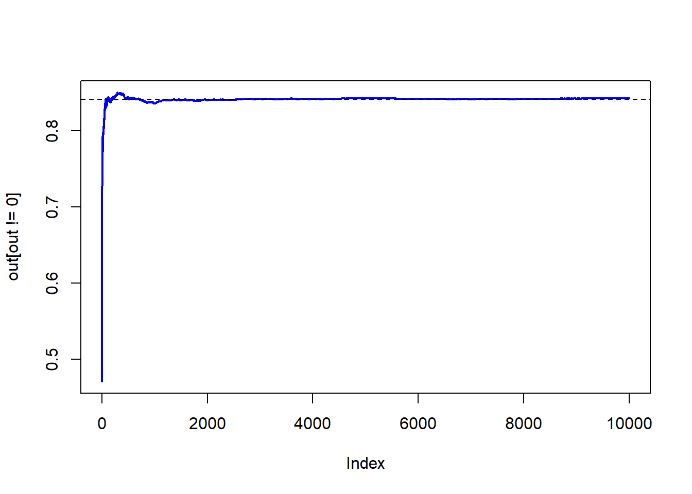
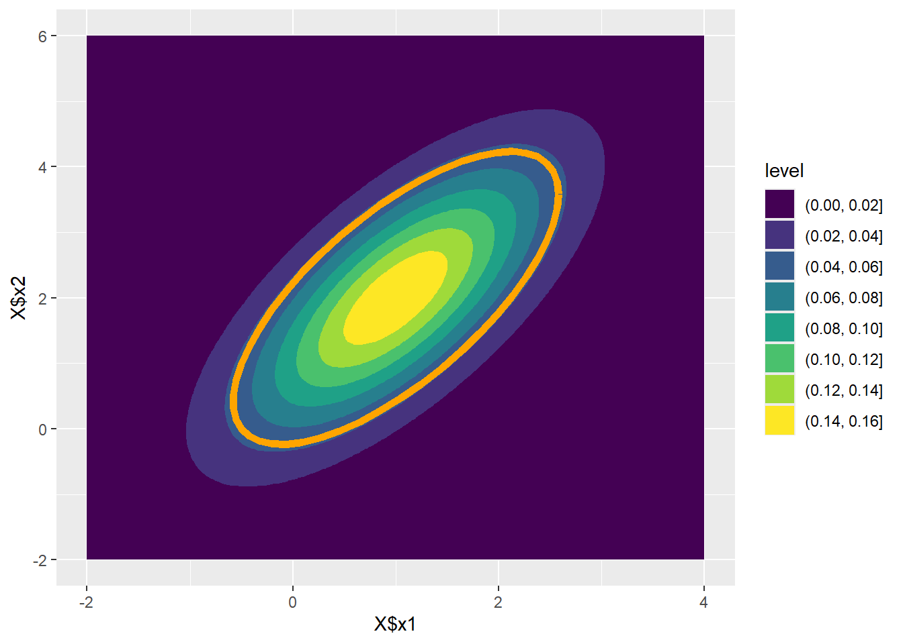
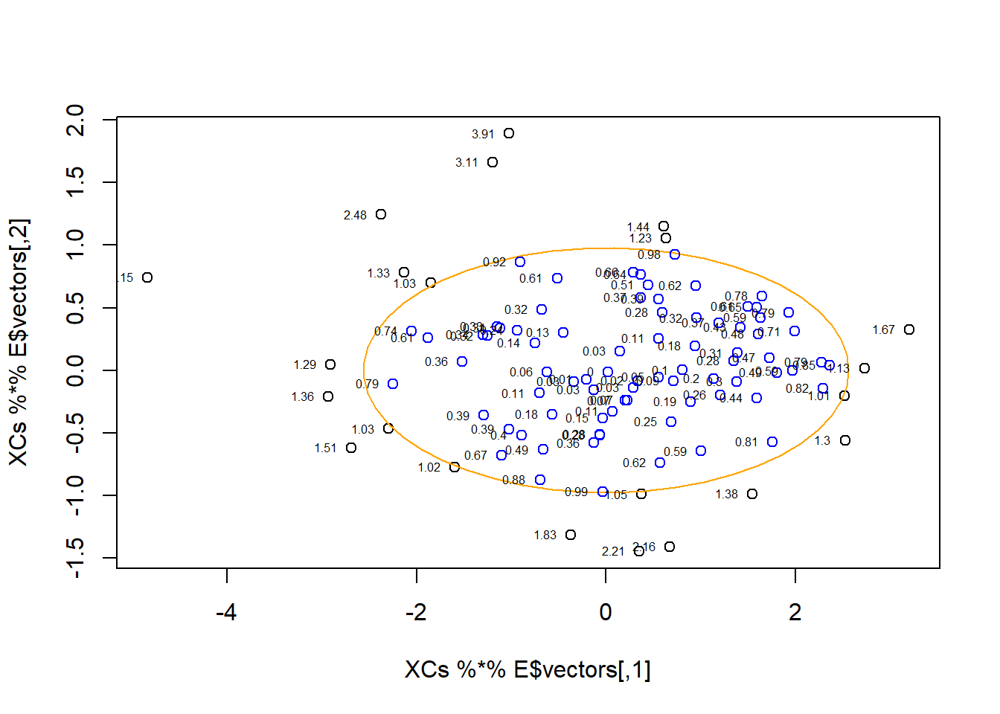

Finding ellipsoidal probabilities under the multivariate normal model
Introduction
Many statistical models impose multivariate normality, for example, for example on the regression parameters in a linear regression model. A question that may arise is how to find the probability that a random vector falls into some convex region \(\mathcal{A}\) under this model. That is, we seek to find \[
P(\mathbf{x}\in \mathcal{A}) = \int_{\mathcal{A}} f(\mathbf{x}) d\mathbf{x},
\] where \(f(\mathbf{x})\) is the density of the multivariate normal distribution. That is, \[
f(\mathbf{x}) = \frac{1}{\sqrt{(2\pi)^p |\mathbf{\Sigma}|}}
\exp \Bigg\{
-\frac{1}{2} (\mathbf{x}- \mathbf{\mu})^\top \mathbf{\Sigma}^{-1} (\mathbf{x}- \mathbf{\mu}) \Bigg\},
\] where \(p\) denotes the number of dimensions, \(\mathbf{\mu}\) is the mean vector, and \(\mathbf{\Sigma}\) is the covariance matrix, and \(|\cdot|\) denotes the determinant.
Solving \(P(x \in \mathcal{A})\) when \(\mathcal{A}\) is a hyperrectangle
If the region \(\mathcal{A}\) is rectangular, the problem is easily solved using of the shelf tools, such as the pmvnorm function in the mvtnorm package in R. In such circumstances, we seek to find the solution of the integral \[
P(\mathbf{x}\in \mathcal{A}) =
\frac{1}{\sqrt{(2\pi)^p |\mathbf{\Sigma}|}}
\int_{a_1}^{b_1} \int_{a_2}^{b_2} \cdots \int_{a_p}^{b_p}
\exp \Bigg\{
-\frac{1}{2} (\mathbf{x}- \mathbf{\mu})^\top \mathbf{\Sigma}^{-1} (\mathbf{x}- \mathbf{\mu}) \Bigg\}
\Bigg\} d\mathbf{x},
\] where \(a_i\) and \(b_i\) are the lower and upper bounds of the \(i\)th dimension of the region \(\mathcal{A}\). Genz (1992) shows that this integral can be transformed into the iterated integral \[
P(\mathbf{x}\in \mathcal{A}) =
(e_1 - d_1) \int_0^1 (e_2 - d_2) \dots \int_0^1 (e_m - d_m) \int_0^1 d \mathbf{w},
\] with \(d_i = \mathbf{\Phi}((a_i - \sum^{i-1}_j c_{i,j} \mathbf{\Phi}^{-1}(d_j + w_j(e_j-d_j)))/c_{i,i})\) and \(e_i = \mathbf{\Phi}((b_i - \sum^{i-1}_j c_{i,j} \mathbf{\Phi}^{-1}(d_j + w_j(e_j-d_j)))/c_{i,i})\). That is, we transform the problem into a series of univariate integrals that can be easily solved using standard univariate integration tools as, for example, pnorm() in R.
The following code implements the approach in R. Note, however, that the current implementations use some additional tricks to increase the accuracy of the program (or reduce the computation time), by changing the order of the variables.
set.seed(123)# ParametersP <-5rho <-0.5S <- rho + (1-rho) *diag(P)mu <-1:P# Integration limitsa <-sample(-(1:P)) - mub <-3*sample(1:P) - mu# Test resultsmvtnorm::pmvnorm(lower = a, upper = b, mean =0, sigma = S)
# Convergence limitsmaxerr <-1e-4Nmax <-10000# Cholesky decompositionC <-t(chol(S))# Initialize variablesintsum <-0varsum <-0N <-1d1 <-pnorm(a[1]/C[1,1])e1 <-pnorm(b[1]/C[1,1])f1 <- e1 - d1# Loop until convergenceconv <-FALSEout <-numeric(Nmax)while(!conv) { w <-runif(P-1) di <- d1 ei <- e1 fi <- ei - difor (i in2:P) {if (i ==2) yi <-0 yi[i-1] <-qnorm(di + w[i-1] * (ei - di)) di <-pnorm((a[i] -sum(C[i, 1:(i-1)]*yi))/C[i,i]) ei <-pnorm((b[i] -sum(C[i, 1:(i-1)]*yi))/C[i,i]) fi <- (ei - di) * fi } intsum <- intsum + fi varsum <- varsum + fi^2 N <- N+1 err <-1* ((varsum/N - (intsum/N)^2)/(N))^.5 out[N-1] <- intsum/Nif (N == Nmax | err < maxerr) conv <-TRUE}N
[1] 10000
err
[1] 0.001287477
intsum/N
[1] 0.8424054
plot(out[out !=0], type ="l", lwd =2, col ="blue")abline(h = mvtnorm::pmvnorm(lower = a, upper = b, mean =0, sigma = S), lty=2)

Moreover, we can confirm the procedure using a small simulation.
a <- a + mub <- b + muN <-10000000X <-rnorm(N*P) |>matrix(N) %*%chol(S) +matrix(mu, N, P, byrow =TRUE)sapply(1:P, function(p) X[,p] >= a[p] & X[,p] <= b[p]) |> {\(x) rowSums(x) == P}() |>mean()
[1] 0.840875
However, if the integration is not over a hyperrectangle, the current approach cannot be used, and we need to resolve to other techniques.
Solving \(P(x \in \mathcal{A})\) when \(\mathcal{A}\) is a hyperellipse
When the region \(\mathcal{A}\) is an ellipse, the problem is more complicated, at least in the sense that it is not executable using the mvtnorm package.
Solving \(P(x \in \mathcal{A})\) when \(\mathcal{A}\) is a constant-density hyperellipse around \(\mathbf{\mu}\)
First, consider the case where the ellipse is a constant-density hyper-ellipse, that is by definition centered around the mean vector \(\mathbf{\mu}\) and with axes in the directions of the eigenvectors of the covariance matrix \(\mathbf{\Sigma}\). We can visualize the idea as follows.
mu <-c(1,2)S <-matrix(c(1,1,1,2), ncol =2)# Generate a grid with density values for the multivariate normal distributionx1 <-seq(-2, 4, length.out =200)x2 <-seq(-2, 6, length.out =200)X <-expand_grid(x1, x2) |>mutate(z = mvtnorm::dmvnorm(cbind(x1, x2), mu, S))# Create evenly spaced points on a unit circleangles <-seq(0, 2*pi, length.out =50)unit.circle <-cbind(cos(angles), sin(angles))# Specify the radius of the circleC <-2.5# Make the circle elliptical by scaling with the Cholesky # decomposition of the covariance matrixellipse <-t(mu +t(unit.circle %*%chol(C * S)))ggplot() +geom_contour_filled(aes(x = X$x1, y = X$x2, z = X$z)) +geom_path(data =NULL, aes(x = ellipse[,1], y = ellipse[,2]),col ="orange", linewidth =2)

Here, the orange circle in the plot represents the ellipse with constant density 0.046.
Noting that the quadratic form \(\Delta^2 = (X-\mathbf{\mu})^T\mathbf{\Sigma}^{-1}(X-\mathbf{\mu})\), which is also known as the Mahalanobis distance, follows a \(\chi^2_\nu\) distribution with \(\nu = P\) degrees of freedom, we can use this property to calculate the probability of a point falling within the ellipse.
Given that the radius of the ellipse is \(C\), we can calculate the probability that a point falls within the ellipse using the cumulative distribution function of the \(\chi^2\) distribution, implemented in R as the pchisq function.
pchisq(C, df =length(mu))
[1] 0.7134952
We can verify this by simulating a large number of points, and calculating the proportion of the points that falls within the ellipse. Calculating whether a point falls within a given hyperellipse in a \(P\)-dimensional space can be done by rotating the data points such that the axes of the ellipse align with the coordinate axes. Then, we can calculate whether the point falls within the ellipse by calculating the Euclidean distance of a point to the origin, and evaluate whether the sum of the squared coordinates is smaller than the squared half-axis-lengths. Note that the squared half axis lengths are given by the eigenvalues of the covariance matrix \(\mathbf{\Sigma}\) multiplied with the constant \(C\).
N <-100000000P <-length(mu)X <-rnorm(N*P) |>matrix(N) %*%chol(S) +matrix(mu, N, P, byrow =TRUE)XC <- X -matrix(mu, N, P, byrow =TRUE)E <-eigen(S)((XC %*% E$vectors)^2/matrix(E$values * C, N, P, byrow =TRUE)) |>rowSums() |>{\(x) x <=1}() |>mean()
[1] 0.7135046
For a visual presentation of this procedure, consider the following example, in which we use the same parameters, but set the sample size to \(N = 100\).
plot(XCs %*% E$vectors)lines(ellipse, col ="orange")points(XCs[Xdist <=1,] %*% E$vectors, col ="blue")text(XCs %*% E$vectors, labels =round(Xdist, 2), pos =2, cex =1/2)

Note that this approach is exactly equivalent to calculating the quadratic form explicitly, and calculating how many observations are smaller than the critical value \(C\).
Sinv <-solve(S)delta <-rowSums(XC * (XC %*% Sinv))mean(delta <= C)
[1] 0.7135046
Using this approach, we can directly show that the quadratic form indeed follows a \(\chi^2_\nu\) distribution.
Now we have obtained a method to calculate the probability of a point falling within a hyperellipse centered around the mean vector \(\mathbf{\mu}\) with axes in the directions of the covariance matrix \(\mathbf{\Sigma}\). However, when the ellipse is not centered around the mean vector, this approach will not work, and we need to resolve to a different method.